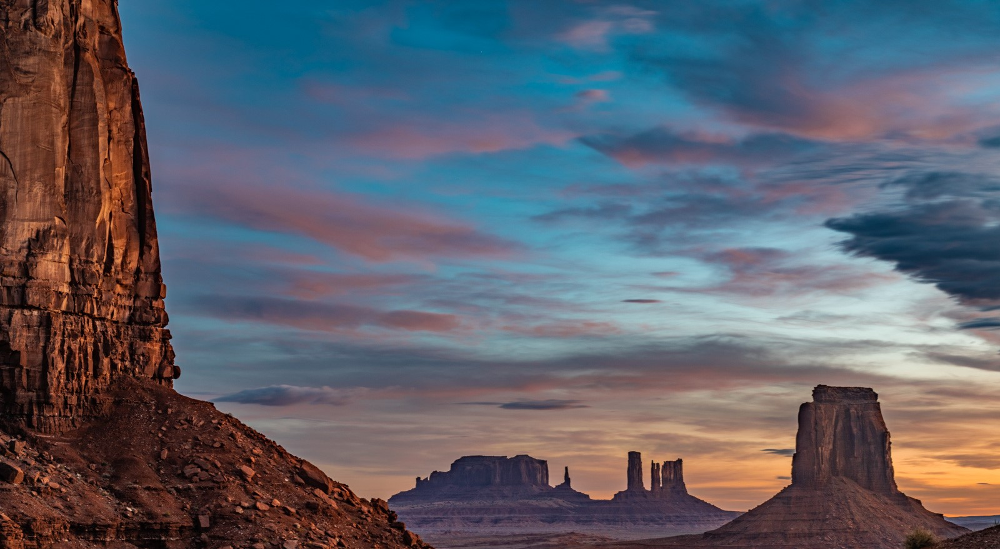
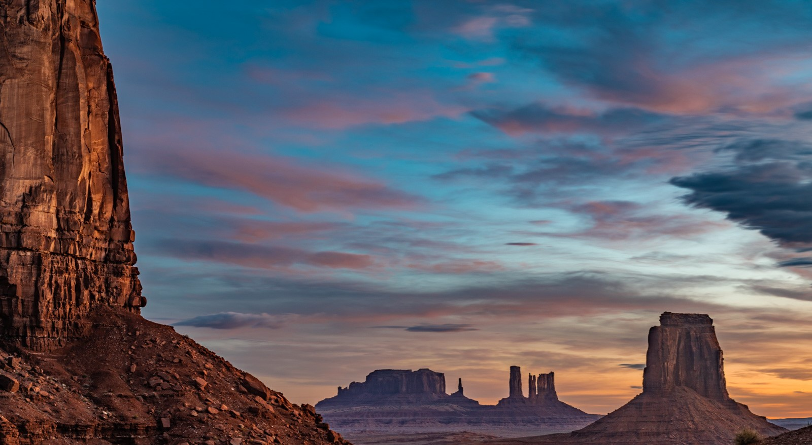

Antelope Canyon 1
Monument Valley (Navajo: Tsé Biiʼ Ndzisgaii, pronounced [tsʰépìːʔ ǹtsɪ̀skɑ̀ìː], meaning valley of the rocks) is a region of the Colorado Plateau characterized by a cluster of sandstone buttes, the largest reaching 1,000 ft (300 m) above the valley floor .[1] The most famous butte formations are located in northeastern Arizona along the Utah–Arizona state line. The valley is considered sacred by the Navajo Nation, the Native American people within whose reservation it lies.[2] Monument Valley has been featured in many forms of media since the 1930s. Director John Ford used the location for a number of his Westerns; critic Keith Phipps wrote that "its five square miles [13 km2] have defined what decades of moviegoers think of when they imagine the American West".[3]
Monument Valley is maintained as a visitor attraction by Navajo Nation Parks & Recreation. Visitors are welcome to drive the 17-mile dirt loop, Valley Drive, on self-guided tours of the valley. Multiple parking areas along the way bring many of the park’s most spectacular rock formations into view. Or set off on the only public hike in the valley, an easy 3-mile loop trail that takes visitors to Mitten Butte, one of the most iconic landmarks of the American West. Visitors can also join guided Jeep tours for up-close views of ancient cliff dwellings and natural arches in more isolated locations.
Meet the silversmiths, potters and weavers who preserve traditional Navajo methods in their artwork. Inside the park, the Trading Post at The View Hotel offers one of the largest collections of Navajo rugs in the Four Corners area of Arizona. Visitors also find a selection of traditional and contemporary Navajo art such as squash blossom necklaces, concho belts, hand-woven baskets and sand paintings. And as a nod to the Western movies that introduced Monument Valley to the nation, a section of the trading post sells John Wayne memorabilia. If you do not make it to the trading post, artisans also set up roadside markets along Valley Drive to sell their authentic Native American arts and crafts.
The Colorado Plateau area encompassing the Arizona-Utah border features some of the most scenic drives in the United States. While the area is remote and services are limited, small towns such as Dennehotso and Kayenta have restaurants and convenience stores to stock up on road trip supplies. Plus, inside the park, The View Hotel offers an overnight option with rooms and cabins that capture magnificent views of the valley. Options for RVs and camping in Monument Valley allow visitors to fully surround themselves with stunning rock outcroppings that come to life with color and light every sunrise and sunset.
HOTELS TO STAY
PLACES TO VISIT
REPEAT VISITORS
SAFE & SECURE
Monument Valley is a breathtaking natural wonder with its iconic red rock formations and towering sandstone buttes. It's a surreal and mesmerizing landscape that transports visitors to another world. Antelope Canyon is a stunning slot canyon known for its mesmerizing play of light and shadow on the smooth, winding sandstone walls. It's a photographer's paradise and offers a unique and mystical experience.
 
